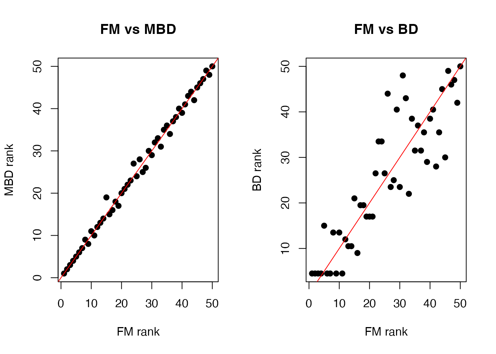
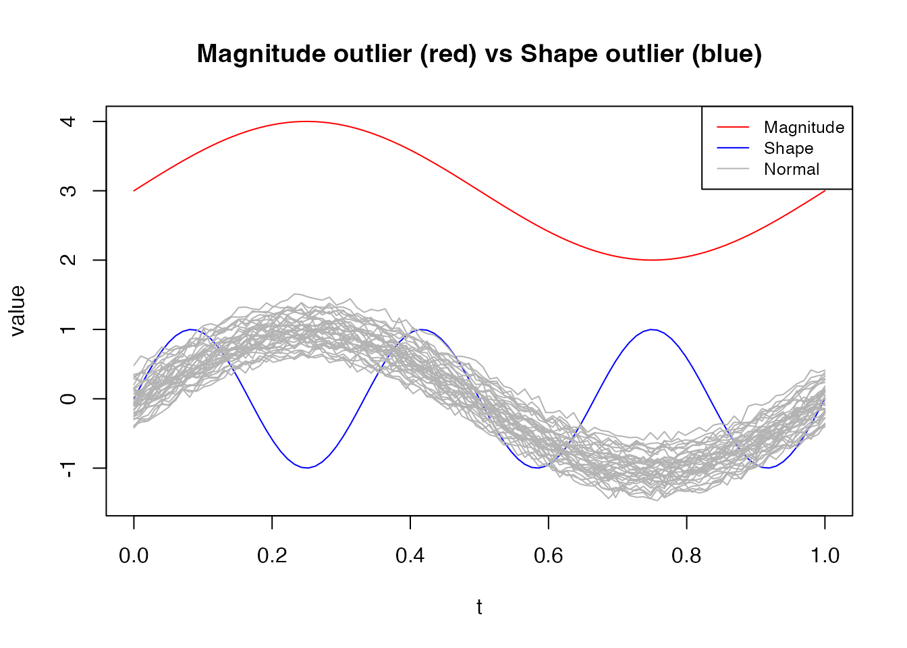
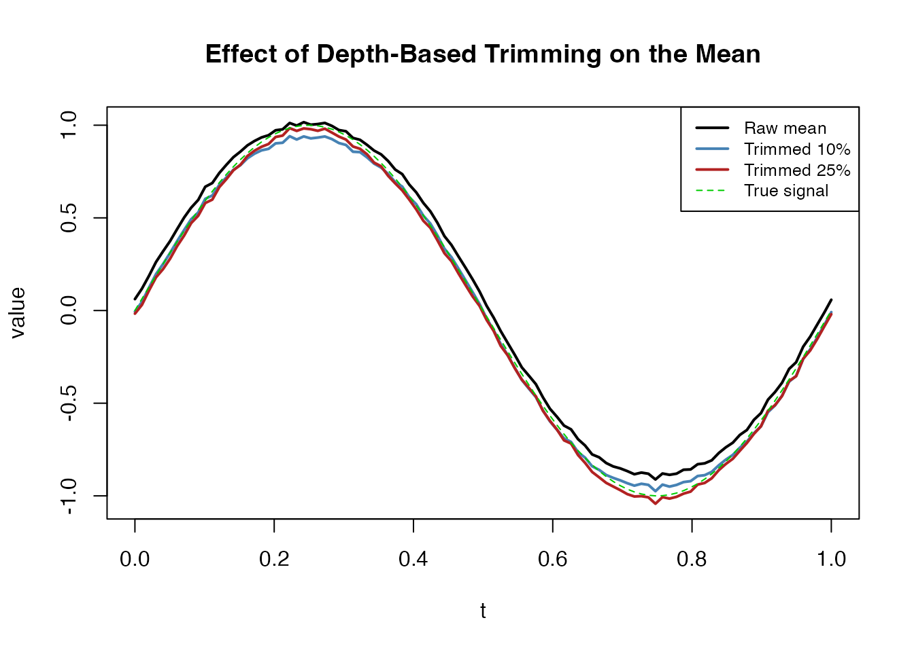
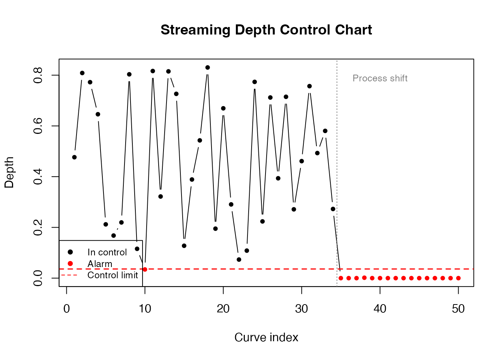
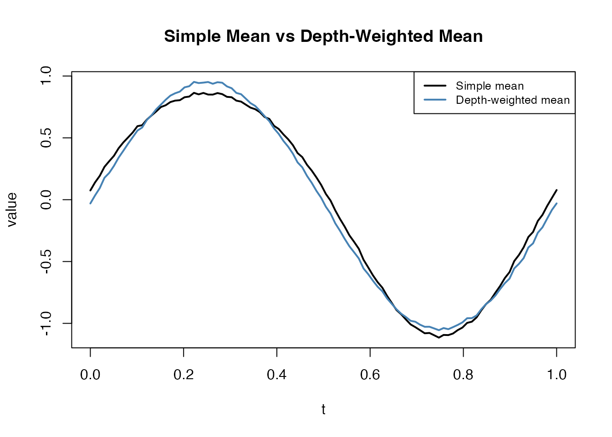

Introduction
Standard depth computations require time for curves on grid points, which becomes expensive for large reference samples. Streaming depth decouples reference-set construction from query evaluation: the reference data is pre-sorted at each time point, enabling depth per query curve.
This is particularly useful for:
- Online monitoring: Evaluating new curves as they arrive against a fixed reference
- Large reference samples: When is large, the lookup is much faster than
Self-Depth (Batch)
The simplest use case computes the depth of each curve relative to the full dataset:
library(fdars)
#>
#> Attaching package: 'fdars'
#> The following objects are masked from 'package:stats':
#>
#> cov, decompose, deriv, median, sd, var
#> The following object is masked from 'package:base':
#>
#> norm
set.seed(42)
# Generate functional data
n <- 50
m <- 100
argvals <- seq(0, 1, length.out = m)
data <- matrix(0, n, m)
for (i in 1:n) {
data[i, ] <- sin(2 * pi * argvals) + rnorm(1, 0, 0.3) + rnorm(m, 0, 0.05)
}
# Add an outlier
data[1, ] <- 5 * cos(4 * pi * argvals)
fd <- fdata(data, argvals = argvals)
# Compute streaming FM depth
d_fm <- streaming.depth(fd, method = "FM")
head(round(d_fm, 4))
#> [1] 0.0516 0.3324 0.2760 0.4224 0.6996 0.8992The outlier (curve 1) has the lowest depth:
Monitoring New Curves
A key application is evaluating new observations against a fixed reference sample:
# Split into reference and new data
ref <- fd[1:40]
new_curves <- fd[41:50]
# Compute depth of new curves against reference
d_new <- streaming.depth(new_curves, fdataori = ref, method = "FM")
round(d_new, 4)
#> [1] 0.7700 0.6085 0.3785 0.3870 0.5795 0.2195 0.9125 0.6630 0.7855 0.3600Curves with unusually low depth may be considered anomalous.
Comparing FM, MBD, and BD
Three streaming depth methods are available:
- FM (Fraiman-Muniz): Integrates pointwise depth ranks; robust general-purpose
- MBD (Modified Band Depth): Based on fraction of time a curve is within bands; always in [0, 1]
- BD (Band Depth): All-or-nothing band containment; more conservative
d_fm <- streaming.depth(fd, method = "FM")
d_mbd <- streaming.depth(fd, method = "MBD")
d_bd <- streaming.depth(fd, method = "BD")
# Compare rankings
df <- data.frame(
curve = 1:n,
FM = d_fm,
MBD = d_mbd,
BD = d_bd
)
# Correlations between methods
round(cor(df[, -1]), 3)
#> FM MBD BD
#> FM 1.000 0.974 0.923
#> MBD 0.974 1.000 0.938
#> BD 0.923 0.938 1.000The methods generally agree on ranking, though MBD and FM tend to be more concordant:
par(mfrow = c(1, 2))
plot(rank(d_fm), rank(d_mbd), pch = 19,
xlab = "FM rank", ylab = "MBD rank", main = "FM vs MBD")
abline(0, 1, col = "red")
plot(rank(d_fm), rank(d_bd), pch = 19,
xlab = "FM rank", ylab = "BD rank", main = "FM vs BD")
abline(0, 1, col = "red")
Outlier Detection
Depth naturally provides an outlier score: curves with low depth are far from the centre of the distribution. A simple threshold on the depth values identifies magnitude outliers (shifted too high or too low) and shape outliers (unusual patterns).
Threshold-Based Detection
# Depth-based threshold: flag curves below the 5th percentile
threshold <- quantile(d_fm, 0.05)
outlier_idx <- which(d_fm < threshold)
cat("Outlier indices:", outlier_idx, "\n")
#> Outlier indices: 1 30 37
cat("Outlier depths:", round(d_fm[outlier_idx], 4), "\n")
#> Outlier depths: 0.0516 0.0188 0.0812Combining with the Functional Boxplot
The functional boxplot uses depth to define a central region and fences. Streaming depth can serve as the depth engine:
Magnitude vs Shape Outliers
Different outlier types have different depth signatures. Magnitude outliers (vertically shifted) are detected by all depth methods. Shape outliers (unusual pattern but similar range) are harder — MBD is particularly sensitive to them:
set.seed(42)
n <- 40
data_out <- matrix(0, n, m)
for (i in 1:n) {
data_out[i, ] <- sin(2 * pi * argvals) + rnorm(1, 0, 0.2) + rnorm(m, 0, 0.05)
}
# Add a magnitude outlier (shifted up)
data_out[1, ] <- sin(2 * pi * argvals) + 3
# Add a shape outlier (different frequency)
data_out[2, ] <- sin(6 * pi * argvals)
fd_out <- fdata(data_out, argvals = argvals)
d_fm_out <- streaming.depth(fd_out, method = "FM")
d_mbd_out <- streaming.depth(fd_out, method = "MBD")
cat("Magnitude outlier (curve 1):\n")
#> Magnitude outlier (curve 1):
cat(" FM depth: ", round(d_fm_out[1], 4),
" MBD depth:", round(d_mbd_out[1], 4), "\n")
#> FM depth: 0 MBD depth: 0.05
cat("Shape outlier (curve 2):\n")
#> Shape outlier (curve 2):
cat(" FM depth: ", round(d_fm_out[2], 4),
" MBD depth:", round(d_mbd_out[2], 4), "\n")
#> FM depth: 0.193 MBD depth: 0.1718
cat("Typical curve (curve 3):\n")
#> Typical curve (curve 3):
cat(" FM depth: ", round(d_fm_out[3], 4),
" MBD depth:", round(d_mbd_out[3], 4), "\n")
#> FM depth: 0.333 MBD depth: 0.3231
cols <- rep("grey70", n)
cols[1] <- "red"
cols[2] <- "blue"
matplot(argvals, t(fd_out$data), type = "l", lty = 1, col = cols,
xlab = "t", ylab = "value",
main = "Magnitude outlier (red) vs Shape outlier (blue)")
legend("topright", c("Magnitude", "Shape", "Normal"),
col = c("red", "blue", "grey70"), lty = 1, cex = 0.8)
Depth-Based Trimming
Streaming depth can drive robust summary statistics. The
trimmed mean drops the least deep curves before
averaging, providing a robust functional mean that is less sensitive to
outliers than colMeans:
# Use streaming depth for trimmed mean
tm_10 <- trimmed(fd_out, trim = 0.10, method = "FM")
tm_25 <- trimmed(fd_out, trim = 0.25, method = "FM")
raw_mean <- colMeans(fd_out$data)
cat("Max |raw mean - trimmed 10%|:", round(max(abs(raw_mean - tm_10$data)), 4), "\n")
#> Max |raw mean - trimmed 10%|: 0.0768
cat("Max |raw mean - trimmed 25%|:", round(max(abs(raw_mean - tm_25$data)), 4), "\n")
#> Max |raw mean - trimmed 25%|: 0.131
plot(argvals, raw_mean, type = "l", col = "black", lwd = 2,
ylim = range(c(raw_mean, tm_25$data)),
xlab = "t", ylab = "value",
main = "Effect of Depth-Based Trimming on the Mean")
lines(argvals, as.numeric(tm_10$data), col = "steelblue", lwd = 2)
lines(argvals, as.numeric(tm_25$data), col = "firebrick", lwd = 2)
lines(argvals, sin(2 * pi * argvals), col = "green3", lwd = 1, lty = 2)
legend("topright",
c("Raw mean", "Trimmed 10%", "Trimmed 25%", "True signal"),
col = c("black", "steelblue", "firebrick", "green3"),
lwd = c(2, 2, 2, 1), lty = c(1, 1, 1, 2), cex = 0.8)
With outliers present, trimming at 25% recovers a mean much closer to the true generating function.
Process Monitoring
A practical use case for streaming depth is statistical process control: a reference sample defines “normal” behaviour, and incoming curves are flagged when their depth falls below a control limit.
set.seed(42)
# Phase 1: Establish reference from in-control process
n_ref <- 100
data_ref <- matrix(0, n_ref, m)
for (i in 1:n_ref) {
data_ref[i, ] <- sin(2 * pi * argvals) + rnorm(1, 0, 0.2) + rnorm(m, 0, 0.05)
}
fd_ref <- fdata(data_ref, argvals = argvals)
# Compute self-depth to establish control limit
d_ref <- streaming.depth(fd_ref, method = "FM")
control_limit <- quantile(d_ref, 0.01) # 1st percentile
cat("Control limit (1st percentile):", round(control_limit, 4), "\n")
#> Control limit (1st percentile): 0.0361
# Phase 2: Monitor 50 new curves (some from a shifted process)
n_new <- 50
data_new <- matrix(0, n_new, m)
shift_point <- 35 # process shifts at curve 35
for (i in 1:n_new) {
if (i < shift_point) {
# In-control
data_new[i, ] <- sin(2 * pi * argvals) + rnorm(1, 0, 0.2) + rnorm(m, 0, 0.05)
} else {
# Out-of-control: mean shift
data_new[i, ] <- sin(2 * pi * argvals) + 0.8 + rnorm(1, 0, 0.2) + rnorm(m, 0, 0.05)
}
}
fd_new <- fdata(data_new, argvals = argvals)
# Evaluate each new curve against reference
d_monitor <- streaming.depth(fd_new, fdataori = fd_ref, method = "FM")
alarms <- which(d_monitor < control_limit)
plot(1:n_new, d_monitor, type = "b", pch = 19, cex = 0.7,
col = ifelse(d_monitor < control_limit, "red", "black"),
xlab = "Curve index", ylab = "Depth",
main = "Streaming Depth Control Chart")
abline(h = control_limit, col = "red", lty = 2, lwd = 1.5)
abline(v = shift_point - 0.5, col = "grey50", lty = 3)
text(shift_point + 5, max(d_monitor) * 0.95, "Process shift", col = "grey50", cex = 0.8)
legend("bottomleft", c("In control", "Alarm", "Control limit"),
col = c("black", "red", "red"), pch = c(19, 19, NA),
lty = c(NA, NA, 2), cex = 0.8)
cat("Alarms at curves:", alarms, "\n")
#> Alarms at curves: 10 35 36 37 38 39 40 41 42 43 44 45 46 47 48 49 50
cat("First alarm:", min(alarms), "(shift at", shift_point, ")\n")
#> First alarm: 10 (shift at 35 )The depth chart detects the process shift shortly after it occurs. Unlike univariate control charts, this approach monitors the entire curve shape simultaneously.
Depth-Weighted Density Estimation
Depth values can weight curves for density estimation or visualization, giving more influence to central curves and down-weighting outliers:
# Use depth as weights for a weighted mean
d_weights <- d_fm / sum(d_fm)
weighted_mean <- colSums(fd$data * d_weights)
simple_mean <- colMeans(fd$data)
plot(argvals, simple_mean, type = "l", col = "black", lwd = 2,
ylim = range(c(simple_mean, weighted_mean)),
xlab = "t", ylab = "value",
main = "Simple Mean vs Depth-Weighted Mean")
lines(argvals, weighted_mean, col = "steelblue", lwd = 2)
legend("topright", c("Simple mean", "Depth-weighted mean"),
col = c("black", "steelblue"), lwd = 2, cex = 0.8)
The depth-weighted mean down-weights the outlier (curve 1), producing a more representative central tendency.
Performance: Streaming vs Standard Depth
Streaming depth is designed for the scenario where a reference sample is fixed and many query curves must be evaluated. The pre-sorting step is , but each subsequent query is only instead of :
set.seed(42)
sizes <- c(50, 100, 500, 1000)
m_perf <- 100
argvals_perf <- seq(0, 1, length.out = m_perf)
cat("Streaming depth timing (self-depth, FM method):\n")
#> Streaming depth timing (self-depth, FM method):
for (n_size in sizes) {
data_perf <- matrix(rnorm(n_size * m_perf), n_size, m_perf)
fd_perf <- fdata(data_perf, argvals = argvals_perf)
t_elapsed <- system.time(streaming.depth(fd_perf, method = "FM"))["elapsed"]
cat(sprintf(" N = %4d: %.4f sec\n", n_size, t_elapsed))
}
#> N = 50: 0.0000 sec
#> N = 100: 0.0510 sec
#> N = 500: 0.0150 sec
#> N = 1000: 0.0140 secFor large reference samples with many incoming queries, the streaming approach provides substantial speedup over recomputing standard depth from scratch.
Integration with the Depth Dispatcher
Streaming depth is available through the depth()
dispatcher:
d <- depth(fd, method = "streaming")
all.equal(d, streaming.depth(fd, method = "FM"))
#> [1] TRUEThe depth.streaming() alias also works:
d2 <- depth.streaming(fd)
all.equal(d, d2)
#> [1] TRUE